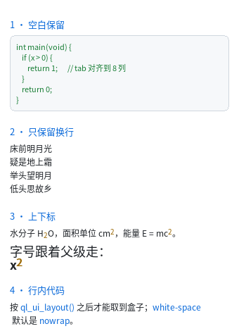

空白与上下标
到这一章为止，文本一直是"折叠空白 + 一行一段"。这一章加上两种"文本里的真内容"：
<pre>—— 空白与换行全部保留，不自动折行<sub>/<sup>—— 基线偏移 + 缩小字号

完整程序：example/12_text_block/main.c
为什么这件事不简单
"保留空白"听起来只是不折叠，但它撞上了一个架构问题：
空白折叠是解析期做的，而
white-space是级联之后才知道的。
本库的解法是把折叠推迟到建表期：原始文本一路留到样式算好之后，那时才决定
"折叠"还是"原样保留"。代价只是编译期的临时内存，静态产物的字节不受影响
（test_golden 守着 28 个页面的 blob 逐字节不变）。
<pre>：代码块
<pre>int main(void) {
if (x > 0) {
return 1;
}
}</pre>
UA 默认给了三样东西：
| 属性 | 值 | 为什么 |
|---|---|---|
display |
block |
代码块前后断行 |
white-space |
pre |
空白与换行全保留、不折行 |
margin |
8px 0 |
与 <p> 一致的块间距 |
两条必踩的坑（都是规范行为，不是 bug）：
- 源码缩进会画出来。
<pre>里每一行的行首空格都是内容。所以写<pre> 代码</pre>时那两格空格真的会出现。要好看就把<pre>的内容顶格写。 - 起始标签后紧接的一个换行会被丢掉。 这是 HTML 的 "ignore the first newline"
规则 —— 不做这一步，写
<pre>\n x\n</pre>每个代码块开头都多一个空行。
\t 会展开成空格（制表位 8 列，按行列号算），否则制表符落到字体查不到的字形上、
宽度 0，整块缩进消失。
white-space 的四个值
| 值 | 空白 | 换行 \n |
自动折行 |
|---|---|---|---|
nowrap（默认） |
折叠 | 保留 | 不折 |
normal |
折叠 | 保留 | 折 |
pre |
保留 | 保留 | 不折 |
pre-wrap |
保留 | 保留 | 折 |
pre-line |
折叠 | 保留 | 折 |
默认是
nowrap而不是浏览器的normal，这是本库的故意差异：v0 的文本模型是 "一段文本就是一行"，大量已有界面（含 golden 基准）建立在这个前提上。改成normal会让那些页面在你没改任何东西的情况下重新排版。想要折行就显式写一行 CSS。
pre-line 特别适合"按行写"的内容（诗句、地址、歌词）：多余空格折叠，换行保留。
<div class="poem">床前明月光
疑是地上霜</div>
.poem { white-space: pre-line; }
<sub> / <sup>：上下标
<p>水分子 H<sub>2</sub>O，面积单位 cm<sup>2</sup>。</p>
UA 默认是 vertical-align: sub|super + font-size: smaller，两个都真的实现了：
| 机制 | 怎么算 | 备注 |
|---|---|---|
font-size: smaller |
父级字号 × 5/6 | 相对父级，所以标题里的上标也协调 |
font-size: larger |
父级字号 × 6/5 | 同上 |
vertical-align: super |
基线 −33% 字号 | 16px 的 <sup> → 字号 13px → 上移 4px |
vertical-align: sub |
基线 +20% 字号 | 同上 |
vertical-align: baseline |
0 | 默认 |
行盒高度不会因为上下标变大（与浏览器一致）。所以极端情况下上标可能顶到
上一行的空隙里 —— 要干净就显式给 line-height。
vertical-align 只支持 baseline / sub / super 三个值：middle / top / bottom
要按行盒对齐，那是行内格式化上下文的事，本库还没有。写了会明确报错。
等宽字体
<pre> / <code> / <kbd> / <samp> 的 font-family 都是 monospace，
QLUIStyle.font_family 因此有两个值：
| 值 | 字体 | 说明 |
|---|---|---|
QL_UI_FAMILY_DEFAULT |
ql_font_default(px) |
正文 |
QL_UI_FAMILY_MONO |
ql_font_mono(px) |
等宽 |
内建位图字体本来就是等宽的，所以不接矢量字体时两级完全一样。 接了 FreeType 之后才分得开：
ql_font_set_default_factory(my_proportional_factory); /* 正文 */
ql_font_set_mono_factory(my_mono_factory); /* 等宽 */
写 font-family: Arial, sans-serif 这种不会报错，会落到正文 ——
"没有 Arial"不该让整页编译不过。候选表里出现 mono 才取等宽。
与浏览器不同的地方
- 默认
white-space: nowrap（见上）。 <pre>的行尾空格会被去掉。 不可见，除非你给整行加text-decoration: underline。tab-size固定 8，不能用 CSS 改。vertical-align只认三个值，middle/top/bottom明确报错。- 字体族只有两级（正文 / 等宽），不是任意
font-family列表。
接下来
下一章把这些控件凑成一个能填的表单 —— <textarea> 多行编辑。